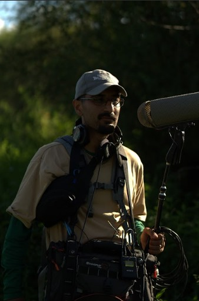

Largometraje · 2026
Sonido directo · Diseño sonoro
César V. Rodríguez
Production Sound Mixer
Sonido directo para cine, publicidad, streaming, podcasts y documental. Experiencia en sets de distinta naturaleza.
01
Trabajo seleccionado
Una muestra de proyectos representativos. Créditos completos disponibles bajo solicitud.
Largometraje · 2026
Against Nature
Largometraje · 2026
Nube
Cortometraje · 2026
Sed
Créditos
- 2026 Estampida Serie Julio Jorquera Microfonista y cablista Netflix / Fabula MX · México.
- 2026 Justicia Serie Natasha Ybarra Microfonista y cablista Canal Once / Contra el Viento Films · México. Showrunner: Natasha Ybarra.
- 2026 Ciudad de Muertos Largometraje Jose Manuel Cravioto Microfonista y cablista Península Films · México.
- 2026 Bajo la Luz, la Sombra Largometraje documental Yulene Olaizola Microfonista y cablista Malacosa Films · México. Microfonía, operación de boom y cableado.
- 2026 Luna Largometraje Vogue Giambri Microfonista Bebop Productions · México / Estados Unidos. Microfonía y operación de boom.
- 2026 Once Upone a Comet, We Existed Largometraje Chenliang Zhu Production Sound Mixer Hikumari Pictures / Vaimon Cinema · México / China. Jefe de departamento. Segundo largometraje del realizador Chenliang Zhu.
- 2026 Against Nature Largometraje Axel Bertha Production Sound Mixer Domme Cinema / Cárcava Cine / Love Song Films · México. Jefe de departamento. Ópera prima. Segundo y tercer bloque de filmación; ADRs, voces en off y regrabaciones en locación.
- 2026 Nube Largometraje Carlos Lozada Production Sound Mixer Producción independiente · México. Jefe de departamento. Ópera prima.
- 2026 Sed Cortometraje Carlos A. Pineda Production Sound Mixer Phobos Media · México. Jefe de departamento. Tesis del Centro de Capacitación Cinematográfica.
- 2025 Zumbidos del Oeste Largometraje documental Brayan del Pozzo Production Sound Mixer PROAES, Sonora · México. Jefe de departamento.
- 2025 Alas Largometraje Manuela Lozada Production Sound Mixer México. Jefe de departamento. Rodaje de abril a mayo de 2025.
- — Contenidos publicitarios Publicidad Varios Production Sound Mixer Tim Hortons, Don Julio, Gatorade, On, Wal Mart, BMW, Jaecoo. Atarashii Gakko!: backstage y documental de concierto en México (NHK, televisora japonesa).
- 2023 Rutas de la Vida Serie TV Azteca Microfonista y cablista TV Azteca · México. Más de 35 episodios de la primera temporada. De noviembre de 2022 a enero de 2023.
- 2023 Lo que la gente cuenta Serie TV Azteca Microfonista y cablista TV Azteca · México. Más de 40 episodios de la segunda temporada. De junio a octubre de 2022.
- 2022 Club de los Remedios Largometraje documental Carlos Pineda Production Sound Mixer CCC · México. Jefe de departamento. Reshots y escenas adicionales.
- 2021 – Publicidad Publicidad Varios Production Sound Mixer México. Gatorade, Head & Shoulders, BMW, VIVO, Cielito Querido, Vanish, Tim Hortons, Don Julio, On, Wal Mart, Jaecoo y NHK (televisión japonesa).
- 2019–22 Cultura Colectiva Contenido digital Cultura Colectiva Ingeniero de audio México. Ingeniero de audio y mixer de la parrilla de contenido de la agencia: series web, documentales, live sessions, comedy stand-up y podcasts.
- 2021 Farándula 021 Podcast Horacio Villalobos Productor e ingeniero de audio México. Gestión, grabación y edición del podcast semanal. Construcción de la identidad sonora del programa y producción de spots publicitarios. De enero a diciembre de 2021.
- 2020 – Producción y diseño sonoro Varios formatos Varios Productor y diseñador sonoro México. Podcasts, cortometrajes, publicidad y radio; identidad sonora de contenidos. Sandra Romandia, Emeequis, Las Hondas, Radio UAM, CCC y cortometrajes independientes.
- 2016–18 Cineteca Nacional Institucional Cineteca Nacional Investigador y editor de vídeo México. Expedientes de prensa y perfiles de realizadores, actores y personalidades del cine. Edición de vídeo para conferencias y cursos del Centro de Documentación.
02
Sobre mí

Sonidista e ingeniero de audio. Abordo cada proyecto buscando garantizar el mejor sonido posible y que la construcción del diseño sonoro se tome en cuenta desde la preproducción y el set.
He trabajado en proyectos de distinta escala: cine, series de televisión, series web, documentales, sesiones musicales y streaming. También trabajo como diseñador sonoro y productor de estudio para artistas musicales, podcasts y programas de radio.
-
Sonido directo
Multipista, boom y wireless, timecode, mezcla en set y reportes.
-
Diseño sonoro
Edición de diálogos, ambientes, foley y construcción de atmósferas.
-
Postproducción
Limpieza, premezcla y entrega de stems según especificación.
-
Formación
Comunicación Social — UAM Xochimilco (2011–2015).
-
Idiomas
Español (nativo) · Inglés (conversación en set).
03
Contacto
Cuéntame fechas, formato y naturaleza del proyecto. Respondo en menos de 24 horas.